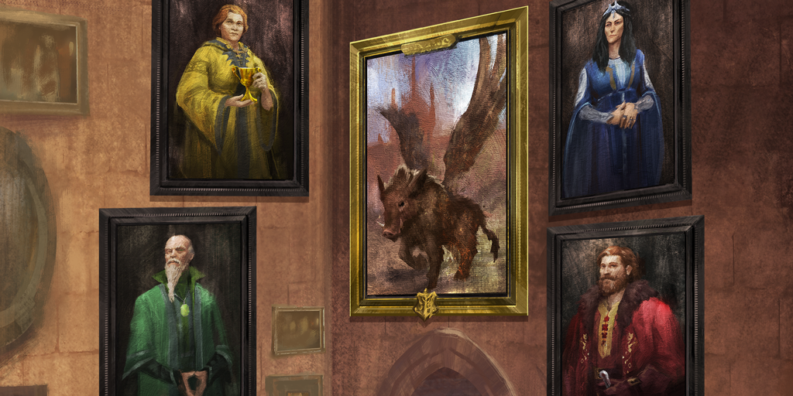
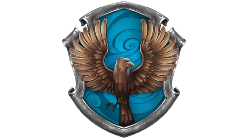

History of Hogwarts
The tenth century was a dangerous time for witches and wizards, who were being persecuted by Muggles (non-magic folk) hostile to magic. Therefore, four of the greatest witches and wizards that ever lived founded Hogwarts School of Witchcraft and Wizardry. Their names were Godric Gryffindor, Rowena Ravenclaw, Helga Hufflepuff and Salazar Slytherin. It’s a popular wizarding theory that Rowena Ravenclaw came up with the name of Hogwarts after dreaming of a warty hog that led her to a cliff by a lake. It’s unknown, however, whether this is actually true.
Hogwarts was built somewhere in the Scottish Highlands, and concealed with numerous charms and spells to make it impossible for Muggles to trespass. For instead of an enormous school, any passing Muggle would only see ruins and signs warning them of danger. The castle itself is huge and complex, Hogwarts has a long history of ancient magic Indeed, much about the design and construction of Hogwarts remains a mystery.
A Tale of Friends
Portraits: Helga Hufflepuff(yellow), Rowena Ravenclaw(blue), Godric Gryffindor(red), Salazar Slytherin(green)
Much like the Marauders, or Harry, Hermione and Ron, the founders of Hogwarts were originally friends. Yet that changed once it became clear that certain founders had a very different idea of what they wanted Hogwarts to be. That founder, of course, was Salazar Slytherin, who distrusted Muggle-born wizards, and believed that only ‘pure-blood’ students should be allowed to attend Hogwarts. The other founders disagreed – especially Godric Gryffindor, who was, up until then, Slytherin’s greatest friend. Their argument – possibly, it’s suggested, a duel – resulted in Slytherin leaving the school behind
Rowena Ravenclaw the greatest witch of her time; a figure famed for her intelligence and wit – she wore an enchanted diadem, which was said to enhance the wisdom of the wearer. Such a witch casts a long shadow, one her daughter Helena found it difficult to escape from. Envying her mother’s status and power, she betrayed her by stealing the diadem – believing it could make her powerful – and ran away from Hogwarts. The betrayal embarrassed Rowena, who told no one, including her fellow founders, that the diadem was missing,
Helga Hufflepuff who was apparently the founder responsible for giving house-elves jobs in the kitchens, giving them somewhere to work where they would be treated fairly, and not be abused. She was also very good at food-related charms, and her recipes are still used by Hogwarts for their feasts.
Godric Gryffindor favoured the virtues of courage and heroism, and has been described by J.K. Rowling as ‘the best duellist of his time’ — both with a wand, and a sword. Thus his legacy lives on with the Sword of Gryffindor, the relic that Harry Potter used to destroy Horcruxes. But he also endures through another object. You see, when the founders became older, they were faced with a problem: how would they ensure that students were sorted into the right House after they were gone? For up until that point, that decision was made by them and them alone. The solution? Godric’s hat. The founders decided that the best course of action was for Godric to take off his hat so that all four of them could enchant it to sort students long after their deaths. And lo, the Sorting Hat was born.
The Four Houses of Hogwarts

House of Gryffindor
‘You might belong in Gryffindor, Where dwell the brave at heart, Their daring, nerve and chivalry Set Gryffindors apart.’
The house founded by Godric Gryffindor values bravery, daring, nerve, and chivalry. To express those characteristics, the lion was chosen as the houses’ symbol, with the vibrant house colors being red and gold.
The Gryffindor house is composed of some of the most well known, and loved, members from the Wizarding World such as Harry Potter, Ron Weasley — the entire Weasley family for that matter –, Hermione Granger, Professor Minerva McGonagall, Albus Dumbledore, Sirius Black and Remos Lupin.
House of Ravenclaw
‘Or yet in wise old Ravenclaw If you’ve a ready mind Where those of wit and learning Will always find their kind.’
Its founder, Rowena Ravenclaw valued intelligence, knowledge, curiosity, creativity, and wit in her students. The house symbol is an Eagle, despite the misconception that it is a raven. The name Ravenclaw means ‘black claw’ which is the color of an Eagle’s claws. The eagle also represents boldness and wisdom reflecting the houses’ values The house colors are blue and copper
Some of the most well-known wizards and witches that were members of the Ravenclaw House while attending Hogwarts were Luna Lovegood, Gilderoy Lockhart, Professor Filius Flitwick, and Garrick Ollivander (Ollivanders wand shop in Diagon Alley).
House of Hufflepuff
‘You might belong in Hufflepuff Where they are just and loyal Those patient Hufflepuffs are true And unafraid of toil.
The Hufflepuff house founded by Helga Hufflepuff is the house for those wizards and witches that value hard work, dedication, patience, loyalty, and fair play. The house mascot is a badger, and its colors are yellow and black.
Some of the most famous members in that was part of the Hufflepuff house were Newt Scamander , Cedric Diggory, Nymphadora Tonks, and Hogwarts’ herbology professor, Pomona Sprout.
House of Slytherin
‘Or perhaps in Slytherin You’ll make your real friends Those cunning folk use any means To achieve their ends.’
Salazar Slytherin valued ambition, leadership, self-preservation, cunning, and resourcefulness, he had a special hereditary trait, he was a Parselmouth. Parseltongue is the language of the serpents, and a wizard or witch that is a parselmouth is able to communicate with magical and non magical serpents. Salazar’s connection to snakes was probably what influenced the Slytherin House symbol to be a serpent, the Slytherin color are green and silver.
Some of the most notable members include Severus Snape, Bellatrix Lestrange, Draco Malfoy, Tom Riddle (aka. Lord Voldemort), Horace Slughorn, Merlin.